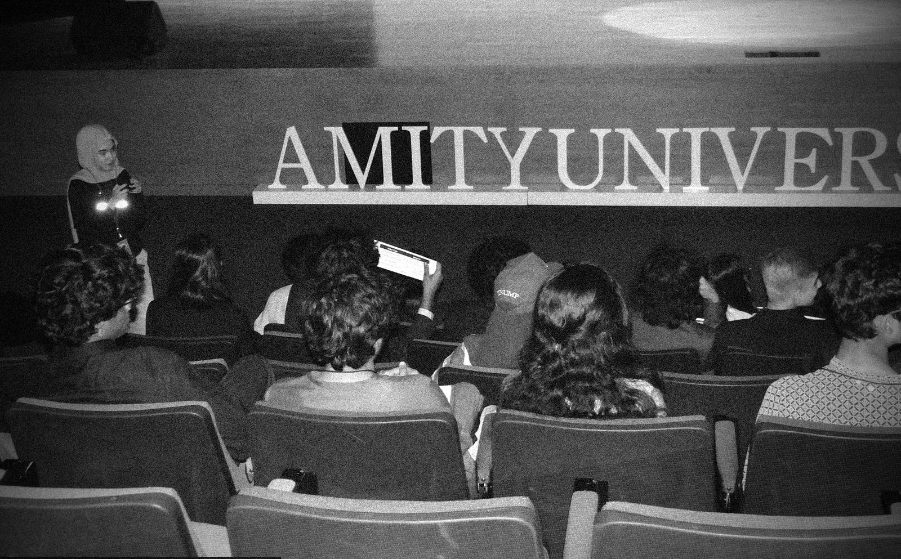

By MUNers,
for MUNers.
Summit of Diplomacy Model United Nations is a real-world simulation of international diplomacy and global governance, run entirely by students.
SODMUN is a premier Model United Nations conference, designed by MUNers for MUNers. It began with a simple idea: build the conference we always wished we could attend, with committees that are rigorous, creative and fun.
Across SODMUN I, II and III, more than 1,500 students have taken their seats in committee. SODMUN IV was expected to bring together over 700 delegates across 25 committees, from the Security Council to Formula 1, making it one of the largest private teen-led MUN conferences in the MENA region.
Whether your goal is to sharpen your diplomacy, find confidence in public speaking or meet future leaders, SODMUN is built to be the most memorable MUN you attend.
Real diplomacy
High-level debate, negotiation and policymaking, modelled on the way the UN actually works.
A committee for everyone
Traditional councils, fast-moving crises and specialised courts, press and fictional worlds.
Built with technology
Our own platform runs committee: chats, paperless POIs, timers and an AI assistant.
Impact beyond the room
Debate that ends in action, like our solar-power project for schools in rural India.
Three co-founders,
one summit.
Vishesh Shah, Rayan Hussain and Aarav Mamtani oversee every part of SODMUN, supported by a Secretariat of more than thirty students.

After our last conference, the team raised over 50,000 AED to build solar panels that bring electricity to schools in rural India.
Charity projects run by an MUN are rare. We hope this one inspires other students to make a real-world impact too.
Five editions,
and counting.
Click to flip through
SODMUN's core team is Dhairya Kamlani, Niyamat Nanda, Tanya Bhargava, Ram Prasad, Ananya Joshi, Jinal Ravaya, Adnan Faisal, Haider Salik and Clayton Monteiro. Our media team, Creative Visuals and Editorial & Design, is led by Ankshita Tiwari, Parth Menon and Sanithi Perera.